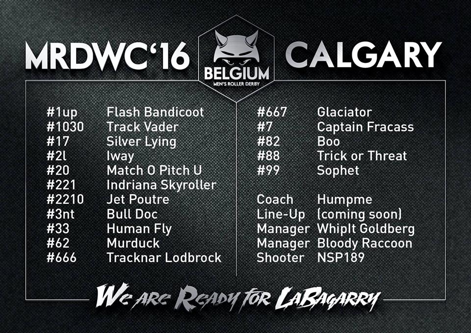

MRDWC 2016 Team Review: Team Belgium
Today we take a look at another of the Northern European teams in the form of Team Belgium. We talk to their head coach about how they have been preparing for this year's MRDWC.

How did your selection process for this year's World Cup differ from the 2014 selection? Did you find there were different factors you were looking for in skaters?
In 2014 Men's Roller Derby was still in an experimental phase. Most of our skaters were referees already familiar with the game. Men's teams in Belgium were rare. This made the selection process pretty simple: everyone who could and wanted to skate, was welcome to join our journey to Birmingham. Even though we were very competitive already, in Birmingham we wanted to put Belgium men's derby on the map. We wanted to inspire more men to take the step to join in so our national team would grow even better and more competitive.
Right around Birmingham, Men's Roller Derby got more popular. Therefor the amount of skaters who wanted to work hard to earn that spot on the roster for the World Cup grew. Back then (in Birmingham) it was more about having enough players to have a full roster to go to the UK, now it is more about having enough skills, being a bigger athlete and derby player. Our team had to work hard to be part of this adventure. For me this is the big difference comparing Birmingham 2014 to Calgary 2016. Even though I must admit we were already pretty awesome in 2014.
How did we handle skaters selections? We started out with 35 players out of the very small country of Belgium. After about 8 trainings and scrimmages, we made a selection. We didn't only focus on skating and derby skills, but also on team spirit: Team Belgium is famous for being a fun team, we have no spots open for big ego's.
One thing that does stand out in comparison with Birmingham 2014 is back then the team was mostly composed of skaters from the Flemish part of Belgium and now... I, Humpme, the bench coach, am the only flemish person in the entire team. This is rather strange because the Flemish part of Belgium has more citizens than the French-speaking part. But, I'll stand my ground ;-)
In the 2014 MRDWC you came 13th just a head of Team Sweden. Is there anything that you have learned from your performance last time that you are taking forward for the 2016 world cup?
Training is necessary to become ONE team. We have to know each other’s strengths to play out the right ones in the right situation, we train to get to know each other’s gameplay, who is sensitive for certain penalties, how to handle frustrations from yourself or other skaters on the team. Basically... Who needs what and when and be the best teammates for one another.
But the most important thing we learned: Belgium always wins the afterparty!
This year you have a bigger distance to travel to compete in the MRDWC. How have you been fundraising to get the team over to Calgary?
If you look at what other teams do, we more or less do the same: we sell t-shirts, we organize games, bootcamps and even a very awesome Sur5all! I'm very proud of our handsome team and the muscles we have built during practice, that's why I'm still waiting on their nude calendar ;-)
Compared to the last world cup how do you think your training schedule has evolved? Is there any new training techniques you hope will give you the edge in the competition?
In the preparation of Birmingham 2014 there wasn't too much training involved. It was rather non-committal. For the road to Calgary 2016 this is completely different: we train two times a month. Belgium, with its 30 500km², is very small, which makes it very easy for us to come together and practice.
Also, not only the quantity of practices and skaters is different in 2016, but quality comes first. Men are powerful, our men have always been powerful, but with power itself you can't make it... other teams will be powerful and full of testosterone as well. We want to play smart and make the difference by doing this. For me, as a coach, it is important for my team they know MY strengths as well. In the 5 years of playing derby, I managed to collect a lot of strategical insight. This is something where players had still room to learn, seems only fair for the amount (or lack) of experience they had one year ago.
Therefore, next to the typical skating skills, endurance drills, … it is very imortant to talk a lot about strategies and create your own: which position do you usually skate within your home league? What works for women and why wouldn't this work for men? What are the strenghts of our team? …
You are up against quite a mixed group this year with the number 4 and 5 seeds being in your group as well as a few newcomers to the MRDWC. Who are you really looking forward to playing this year?
Being in the group with Australia and France is definitely NOT a blessing. We are really curious about Puerto Rico in our group, we don't know them at all so it should be a really interesting game. It looks like we might meet Finland or Scotland IF we end third of the group which would be definitely a hard battle. And that’s what we’re doing it for!
Do you have any specific aims for Calgary that you are willing to share with us? (We're okay if there is any closely guarded secrets you don't want to give up yet!)
Our most important goal is to have a perfect balance between competition and having fun. We are a team that plays very clean and who are not going for sneaky things that the refs don’t see.
If a team wins by suicide hits, grabbing, tackling, high blocking,… resulting in penalties, we prefer loosing with proud. But again: the after party is ours!
Humpme Head coach Team Belgium

Belgium's first fixture will be against Team Australia at 09:00 local time. For the full schedule please visit http://mrdwc.com/schedule-2016/ .